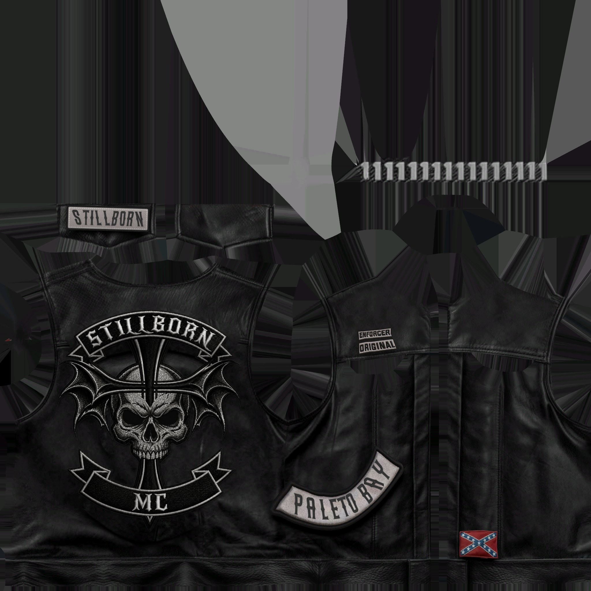
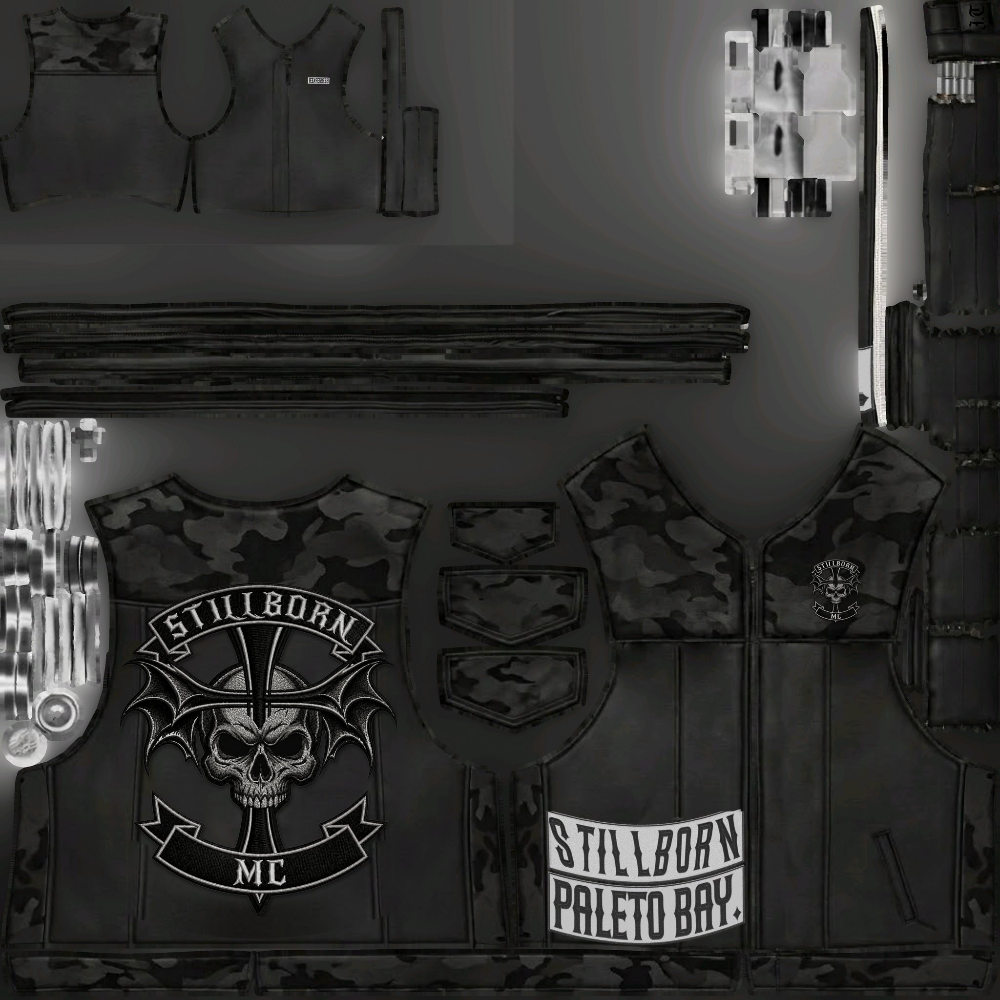

Yelek yükleniyor…
A · TheC yeleği
Deri yelek, tek parça arma. Önde sol cepte STILLBORN bandı, altta PALETO BAY bandı. Enforcer ve bayrak yaması duruyor.
İki yelek yan yana. A, referans sitedeki TheC yeleği. B, gönderdiğin SKAL paketindeki yelek. İkisinde de arkada kulüp logosu, önde STILLBORN ve PALETO BAY yazıları var. İkisi de aynı FiveM kaynağında, oyuna konmaya hazır. Modelleri sürükleyerek çevirebilirsin.
Deri yelek, tek parça arma. Önde sol cepte STILLBORN bandı, altta PALETO BAY bandı. Enforcer ve bayrak yaması duruyor.
Kamuflaj omuzlu yelek. Arkada büyük logo. Önde göğüste küçük logo, altta beyaz STILLBORN / PALETO BAY. yaması.
| Özellik | A · TheC | B · SKAL |
|---|---|---|
| Oyuna hazır mı | Evet. Sitedeki 3D modelden FiveM yelek dosyası yapıldı. Kemik ağırlıkları SKAL yeleğinden aktarıldı. | Evet. SKAL paketinin kendi modeli. |
| Slot | Bileşen 9 · Yelek · çizim 001 | Bileşen 9 · Yelek · çizim 000 |
| Doku | 2048 px tasarım, oyunda 4096 · DXT1 | 4096 × 4096 · DXT1 |
| Arka | Büyük logo | Büyük logo |
| Ön | Sol cepte STILLBORN bandı, altta PALETO BAY bandı | Göğüste küçük logo, altta STILLBORN / PALETO BAY. yaması |
| Model hakkı | TheC Custom's'un modeli. Sunucuya koymadan önce izin alın. | Gönderdiğin paketin modeli |

task_diff_001_a_uni · 2048 px tasarım
task_diff_000_a_uni · 4096 px (burada küçültülmüş)stillborn_yelek klasörünü sunucunun resources klasörüne koy.
server.cfg dosyasına ensure stillborn_yelek ekle.
Oyunda yelek slotu (bileşen 9): çizim 000 B (SKAL), çizim 001 A (TheC). SetPedComponentVariation(ped, 9, çizimNo, 0, 0)
skalyeniyelek. Orijinal SKAL paketiyle birlikte açmayın. Çizim 002 ve 003, SKAL yeleğinin kopyası.